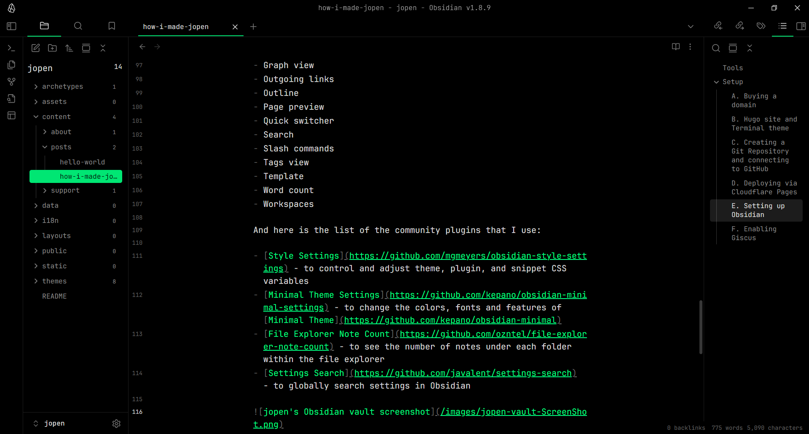

How I Made jopen?
jopen is a blog about mostly tech-related projects I do for fun. In fact, jopen itself is one of them! I wanted to take notes on the process of my projects, and there was no reason to keep them private. So, I made this blog, To Learn In Public.
I don’t like bloated CMSs. This stack is cheap, open-source, and lets me focus on writing in a tool I already use (Obsidian). Plus, it’s all plain text — future-proof.
Here’s how I made it:
Tools#
- Obsidian for writing posts & local Markdown management
- GitHub for cloud-based version control + repo hosting
- Hugo (with Terminal theme) as the static site generator
- Cloudflare Pages for free, automated deployment
- Giscus to integrate a comment system via GitHub Discussions
Every push to GitHub updates the blog via Cloudflare and every comment shows up on GitHub as well.
Setup#
A. Buying a domain#
This was the only step in which I paid for something, purchasing this .link domain for ~$10 a year. But there were cheaper (even free) options as well.
B. Hugo site and Terminal theme#
I customized the color scheme using the Terminal CSS customizer and chose #282828 as the background, #ebdbb2 as the foreground, and #689d6a as the accent color. This generated a .css file, a favicon, and an OG image that I added to my site.
And here’s the list of changes I made to the /themes/terminal/config.toml file:
[params]
customCSS = ["css/terminal.css"]
centerTheme = true
showLastUpdated = true
updatedDatePrefix = "Updated on"
readMore = "Read"
missingContentMessage = "This is not the webpage you're looking for." # A reference from the movie Star Wars: Episode IV - A New Hope
minuteReadingTime = "min[s] read"
words = "word[s]"
[params.logo]
logoText = "jopen"
[menu]
[[menu.main]]
identifier = "about"
name = "About"
url = "/about"
[[menu.main]]
identifier = "tags"
name = "Tags"
url = "/tags"
[[menu.main]]
identifier = "search"
name = "Search"
url = "https://www.google.com/search?q=site%3Ajfryusef.link+QUERY"
C. Creating a Git Repository and connecting to GitHub#
I initialized the local Hugo files in Git and turned on Discussions as a feature on jopen’s GitHub repo (so I can use Giscus in step F).

D. Deploying via Cloudflare Pages#
Added jfryusef.link and www.jfryusef.link as two custom domains.
E. Setting up Obsidian#
I merged the Obsidian vault root and local files of Hugo, and every once in a while, I push its content to GitHub to sync manually because I couldn’t make the Git plugin to work properly.
Here is the list of all the core plugins that are enabled in my vault:
- Backlinks
- Bookmarks
- Command palette
- File recovery
- Files
- Graph view
- Outgoing links
- Outline
- Page preview
- Quick switcher
- Search
- Slash commands
- Tags view
- Template
- Word count
- Workspaces
And here is the list of the community plugins that I use:
- Style Settings - to control and adjust theme, plugin, and snippet CSS variables
- Minimal Theme Settings - to change the colors, fonts and features of Minimal Theme
- File Explorer Note Count - to see the number of notes under each folder within the file explorer
- Settings Search - to globally search settings in Obsidian

And here’s the metadata (frontmatter) for this post:
+++
title = "How I made jopen?"
date = "2025-06-20T13:41:37+03:30"
lastmod = "2025-07-19"
#dateFormat = "2006-01-02" # This value can be configured for per-post date formatting
author = "yusef"
cover = ""
tags = ["jopen", "Markdown", "Obsidian", "Git", "GitHub", "Hugo", "Website", "Software"]
description = "How I built a blog using just Markdown and Git"
showFullContent = false
readingTime = true
draft = true # Until the post is finished
+++
F. Enabling Giscus#
Nothing special. I just enabled comments in almost every page, because why not?
<script src="https://giscus.app/client.js"
data-repo="jfryusef/jopen"
data-repo-id="[REPO ID]"
data-category="Comments"
data-category-id="[CATEGORY ID]"
data-mapping="pathname"
data-strict="0"
data-reactions-enabled="1"
data-emit-metadata="0"
data-input-position="top"
data-theme="gruvbox_dark"
data-lang="en"
data-loading="lazy"
crossorigin="anonymous"
async>
</script>
Updates#
A. Using VS Code instead of Obsidian#
Recently I use VS Code + this md extension and this Gruvbox theme instead of Obsidian for writing posts & local Markdown management. It has built-in GitHub integration as well.
B. Showing full post content instead of summary in RSS readers#
I noticed the full content of my posts didn’t show up on RSS readers, with the help of ChatGPT, I figured out it was because of the Terminal theme. So I made this custom RSS template in /layouts/_default/rss.xml which I think overrides the one in /themes/terminal/layouts/_default/rss.xml
I added the following content to the file:
{{- $pctx := . -}}
{{- $pages := where site.RegularPages "Type" "in" site.Params.mainSections -}}
{{- $pages = $pages | first 50 -}}
{{- printf "<?xml version=\"1.0\" encoding=\"utf-8\"?>" | safeHTML }}
<rss version="2.0">
<channel>
<title>{{ site.Title }}</title>
<link>{{ site.BaseURL }}</link>
<description>{{ site.Params.description | default site.Title }}</description>
<language>{{ site.LanguageCode | default "en-us" }}</language>
<generator>Hugo -- gohugo.io</generator>
{{- range $pages }}
<item>
<title>{{ .Title }}</title>
<link>{{ .Permalink }}</link>
<guid>{{ .Permalink }}</guid>
<pubDate>{{ .Date.Format "Mon, 02 Jan 2006 15:04:05 -0700" }}</pubDate>
<!-- This is the key line that gave me FULL CONTENT -->
<description>
{{ $content := .Content }}
{{ $content = replaceRE "<img( [^>]+)>" "<img$1 />" $content }}
{{ $content | htmlEscape | safeHTML }}
</description>
</item>
{{- end }}
</channel>
</rss>
C. Using Cloudflare Email Routing#
From now on, cloudflare will forward every email sent to mail@jfryusef.link to my main Gmail inbox. This way people can’t see my actual email address until I answer them.
Feel free to share your own setups if you have something similar and If you have any questions, ask them in the comment section below.